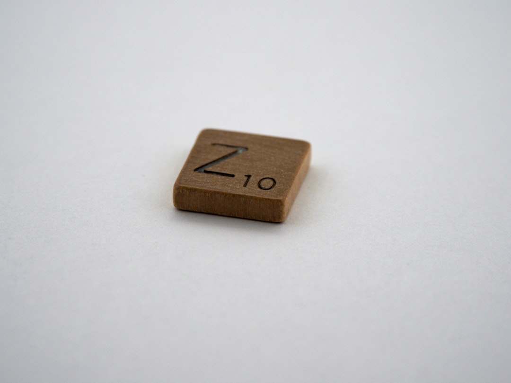

美 완성차, 中 부품 '완전 제거' 선언…韓 소재 수혜 구간 열렸다

미국 완성차 3사(GM·포드·스텔란티스)는 2025년부터 중국산 부품 비중을 단계적으로 '제로(zero)'로 낮추는 공급망 재편 계획을 공식화했다. 포드는 2024년 기준 전체 부품 조달의 약 15%를 중국산에 의존했으며, GM은 중국 합작법인 의존도를 줄이고 멕시코·한국 협력사로 대체 중이다.
전장(電裝) 부품에 쓰이는 네오디뮴 자석(영구자석)·탄탈럼 커패시터·마그네슘 다이캐스팅 부품이 대체 조달 1순위 품목으로 지목된다. 특히 전기차 모터 핵심 소재인 네오디뮴-철-붕소(NdFeB) 자석은 중국이 전 세계 생산의 90% 이상을 장악하고 있어, 미국 완성차의 '중국산 제거'는 구조적 난관에 직면해 있다.
미국 IRA(인플레이션감축법) 조항 중 '해외우려기관(FEOC)' 규정은 2025년부터 중국산 배터리 셀·소재를 탑재한 차량의 세액공제를 전면 차단한다. 이에 따라 현대차·기아 미국 공장은 국내 LG에너지솔루션·삼성SDI 배터리를 탑재한 모델로 전환 속도를 높이고 있으며, 부품 공급사도 비중국산 인증 요건을 충족해야 한다.
한국 1차 협력사(Tier-1)인 현대모비스·만도·HL만도는 GM·포드의 북미 공급망 재편 과정에서 전장 모듈 수주를 늘리고 있다. 현대모비스는 2025년 북미 매출 목표를 전년 대비 18% 높게 설정했으며, 만도는 미국 공장 증설에 2026년까지 3,200억 원을 투자한다.
미국 완성차의 '중국산 제거'는 단순한 무역 갈등이 아니라 자동차 공급망의 구조 재편이다. 소재 공급자 입장에서 보면, 중국산 NdFeB 자석과 마그네슘 다이캐스팅 부품을 대체할 납품처가 절대적으로 부족하다는 것이 현실이다. 완성차 업체가 '제거'를 선언해도 실제 대체 소재를 적기에 확보하지 못하면 생산 라인이 멈추는 역설이 발생한다.
한국은 이 공백에서 실질적 수혜를 가져올 수 있는 몇 안 되는 국가다. 포스코퓨처엠이 양극재·자석 소재 국산화를 추진하고 있고, 성림첨단산업은 비중국산 NdFeB 자석 납품 체계를 구축 중이다. 이 소재들이 FEOC 비해당 인증을 받는 순간, 미국 완성차 공급망에서 한국 기업의 지위는 한 단계 격상된다.
반면 중국산 소재 의존도가 높은 한국 중소 부품사들은 단기 납품 원가 상승 압박을 받는다. 비중국산 소재 조달 비용은 중국산 대비 30~50% 높은 수준으로 형성되어 있어, 가격 경쟁력 유지가 어려운 중소 협력사는 수주 탈락 리스크가 상존한다.
현대모비스·만도·HL만도 등 한국 Tier-1 부품사: 북미 공급망 편입 기회 확대, 현대모비스 북미 매출 목표 +18%(2025년). 비중국산 인증 요건을 충족한 한국 협력사는 GM·포드 1차 벤더 지위를 확보할 가능성이 높다.
포스코퓨처엠·성림첨단산업: NdFeB 자석·양극재 국산화 경쟁에서 FEOC 비해당 인증 획득 시 미국 완성차 직납 루트 개방. 성림첨단산업은 2025년 하반기 1,200톤 규모 비중국산 자석 납품 체계 구축 예정.
중국 부품 재가공 중간상(트레이더): FEOC 규정 강화로 중국산 소재를 제3국에서 가공해 우회 납품하는 경로가 막히면서 수익 모델이 붕괴 중이다. 2025년 하반기부터 미국 세관의 원산지 소급 심사가 강화될 전망이다.
중국산 소재 의존 韓 중소 Tier-2 협력사: 비중국산 전환 비용 부담으로 납품 단가 협상에서 불리한 위치. 전환 투자 여력이 부족한 연매출 500억 원 이하 업체는 주요 완성차 공급망 이탈 가능성이 존재한다.
완성차 공급망 재편을 바라보는 소재 공급자의 핵심 체크포인트는 단 하나, 'FEOC 비해당 인증 타임라인'이다. GM과 포드가 2026년 모델 연도(MY2026)부터 FEOC 소재를 탑재한 부품 공급사 교체를 본격화할 예정이어서, 인증 획득에 최소 18~24개월이 걸리는 현실을 감안하면 지금이 마지막 진입 구간이다.
투자자라면 한국 Tier-1 부품사(현대모비스·만도)보다 소재 단계—NdFeB 자석 전구체·마그네슘 합금 빌렛 납품사—에 주목해야 한다. 완성차·Tier-1의 수주 확대는 결국 소재 병목 해소 속도에 달려 있어, 소재 공급사의 레버리지가 훨씬 크다.
실제 조달 현장에서는 — 미국 완성차 구매팀이 2024년 하반기부터 한국 소재 공급사에 '비중국산 원산지 확약서(CoO Certificate)'를 선결 요건으로 요구하는 사례가 급증하고 있다. 아직 인증 체계를 갖추지 못한 협력사는 RFQ(견적요청) 단계에서 탈락하는 일이 반복되고 있으므로, 원산지 소명 서류와 제3자 감사 체계를 지금 당장 구축해야 한다.
이 포스팅은 쿠팡 파트너스 활동의 일환으로 수수료를 제공받습니다.